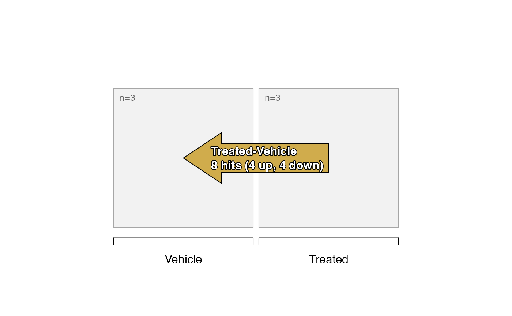
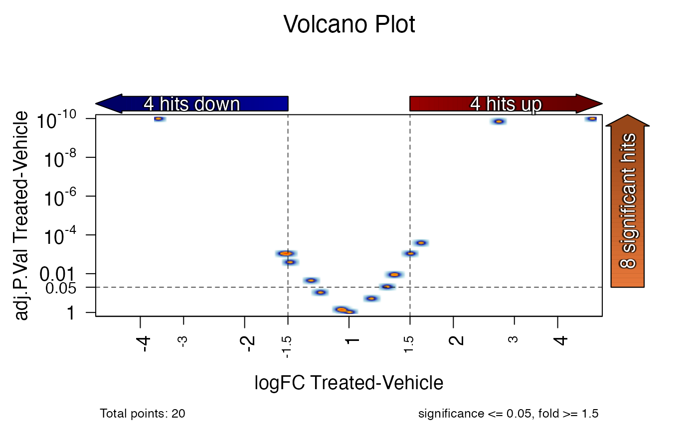
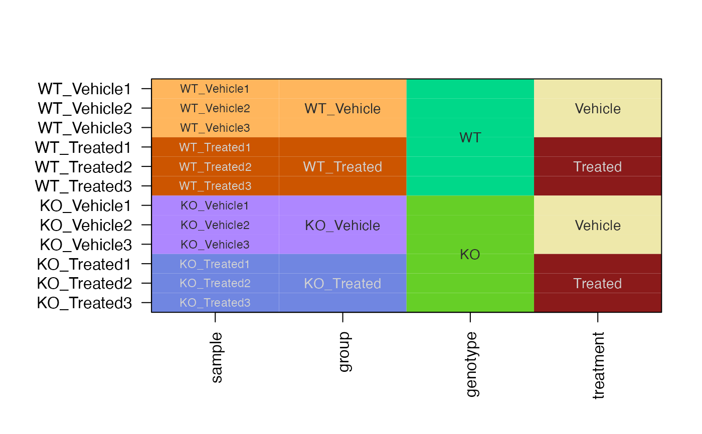
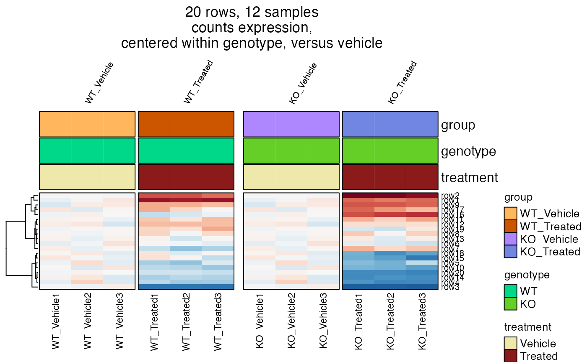
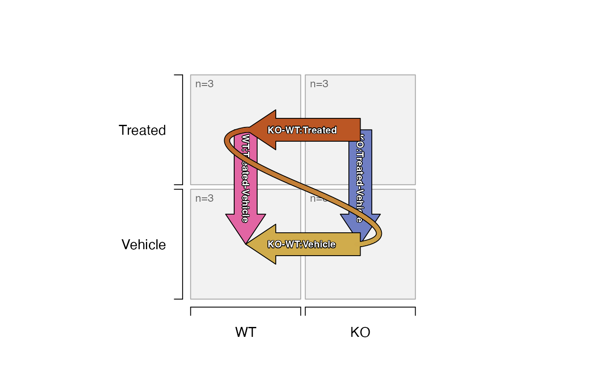

R/jam_secontrasts.R
se_contrast_stats.RdCompute contrast statistics on SummarizedExperiment data
se_contrast_stats(
se,
assay_names,
adjp_cutoff = 0.05,
p_cutoff = NULL,
fold_cutoff = 1.5,
int_adjp_cutoff = adjp_cutoff,
int_p_cutoff = p_cutoff,
int_fold_cutoff = fold_cutoff,
mgm_cutoff = NULL,
ave_cutoff = NULL,
confint = FALSE,
floor_min = NULL,
floor_value = NULL,
sedesign = NULL,
icontrasts = NULL,
idesign = NULL,
igenes = NULL,
isamples = NULL,
enforce_design = TRUE,
use_voom = FALSE,
voom_block_twostep = TRUE,
posthoc_test = c("none", "DEqMS"),
posthoc_args = list(DEqMS = list(PSM_counts = NULL, fit.method = "loess")),
weights = NULL,
robust = FALSE,
handle_na = c("full1", "full", "partial", "all", "none"),
na_value = 0,
rowData_colnames = c("SYMBOL"),
collapse_by_gene = FALSE,
block = NULL,
correlation = NULL,
max_correlation_rows = 10000,
normgroup = NULL,
do_normgroups = TRUE,
seed = 123,
verbose = FALSE,
...
)SummarizedExperiment object.
Note that colnames(se) should match the samples in sedesign,
or the rownames(idesign) when sedesign is not supplied.
Data is subset by colnames(se) using isamples when supplied,
and rownames(se) when igenes is supplied.
Note argument rowData_colnames can be used to retain some
rowData(se) columns in the stat data.frame summaries for
convenience, particularly helpful when analyzing microarray data
where the rownames(se) represent probe ID or assay ID.
character vector with one or more assay names
from names(assays(se)).
numeric value threshold with the adjusted P-value
at or below which a contrast result can be considered a statistical
hit.
This threshold is applied in addition to other cutoff values.
numeric value threshold with the unadjusted P-value
at or below which a contrast result can be considered a statistical
hit. This argument is not recommended, in favor of using adjp_cutoff.
This threshold is applied in addition to other cutoff values.
numeric value threshold indicating the normal
absolute fold change at or above which a contrast result can be
considered a statistical hit. For clarity, this threshold is normal
space fold change, for example 2-fold would be fold_cutoff=2.
optional thresholds used only when a two-way interaction style contrast is detected. These optional thresholds may be useful to apply more lenient criteria to interaction contrasts, but in that event are cautioned to be used for data mining exercises. Ideally, the thresholds are identical between pairwise and interaction contrasts, and ideally there are enough replicates in the data to support the interaction contrasts with sufficient confidence to make those comparisons.
numeric value threshold of the maximum group mean
value required in each contrast for the contrast to be considered
a statistical hit.
The "max group mean" logic requires only one
group in a contrast to be above this threshold, while all other
groups can have values below the threshold.
This threshold is applied in addition to other cutoff values.
numeric value threshold of the average expression
as reported by limma::lmFit(), within each normgroup if relevant,
for the contrast to be considered a statistical hit.
This threshold is applied in addition to other cutoff values.
Typically the column "AvgExpr" is calculated as a row mean.
logical passed to limma::topTable() indicating
whether to calculate 95% confidence intervals for log2 fold change
logFC values. Alternatively it can be a numeric value between
zero and one specifying a specific confidence interval.
numeric minimum value (floor_min) at
or below which numeric values in the assay data matrix are
reverted to floor_value as a replacement. This option is
valuable to set all numeric values at or below zero to zero,
or to set all values at or below zero to NA in circumstances
where zero indicates "no measurement" and would be more accurately
represented as a missing measurement than a measurement of 0.
SEDesign object as defined by groups_to_sedesign(),
with slotNames "design", "contrasts", and "samples".
The arguments idesign and icontrasts are ignored when this
argument is defined.
numeric matrices representing statistical
contrasts, and sample-group design matrices. These values are ignored
when sedesign is defined.
character vector with optional subset of rownames(se),
by default it uses all rownames(se).
character vector with optional subset of colnames(se),
by default it uses colnames(se) that are also defined in the design
matrix.
logical (this option is not implemented).
By default the design matrix is used to subset the input colnames(se)
as needed, and isamples is used to subset the design matrix
and corresponding contrasts as relevant.
logical indicating whether to apply limma-voom
analysis steps. When applied, data is not scaled using limma:voom(),
instead uses data as supplied.
logical indicating whether to perform the
"two-step" voom methodology when block is also supplied.
This workflow is recommended by voom authors:
call voom() first without block to determine overall weights
call duplicateCorrelation() if necessary, using the voom weights,
and the block argument, to calculate correlation.
call voom() again using the correlation, weights, and block
arguments. This produces improved weights.
call duplicateCorrelation() again with the updated weights,
and block in order to calculate improved correlation.
Then proceed with lmFit() using appropriate weights using
block; and appropriate correlation also using the proper weights
and block.
character string indicating an optional post-hoc
test to apply.
"none": applies limma::eBayes() by default, the moderated t-test.
"DEqMS": applies adjustment for proteomics measurements provided
by the package "DEqMS". See posthoc_args.
list named by the posthoc_test above.
"DEqMS" recognizes two arguments, which are passed to
DEqMS::spectraCounteBayes():
"PSM_counts": a numeric vector of peptide spectra matched, one
per igenes or rownames(se). These values are used by DEqMS to
model variability based upon the number of spectra as the key
measure of confidence.
"fit.method": character name of the model to use, default
is "loess".
numeric non-negative precision weights passed to
limma::lmFit(), either as a matrix with nrow and ncol that
match igenes and isamples, respectively, or matching one
of length(igenes) or length(isamples). When igenes or isamples
are not supplied, it uses nrow(se) or ncol(se), respectively.
logical passed to limma::eBayes(), whether estimation
of df.prior and var.prior should be robust against outlier
sample variances.
character string indicating how to handle NA
values in the data matrix, passed to handle_na_values().
"partial": Replace NA values with na_value,
except when an entire group is NA the entire group is kept at NA.
"full": Retain NA values, except when an entire group is NA
the replicate values are replaced with na_value. The option
"full1" may be preferred, since it only replaces one value
in the group, therefore does not misrepresent the variability
of the group as zero.
"full1": Retain NA values, except when an entire group is NA,
one replicate value in the group is replaced with na_value. By
replacing only one replicate with na_value the group does not
have a variance/dispersion, forcing the variance to be determined by
the other group in the contrast, while still allowing an approximate
fold change to be calculated. This option is suitable when there
is a noise floor above zero, as it retains an approximate
fold change while estimating a P-value using only the variance
derived from the non-NA group.
"all": replace all NA values with na_value.
"none": perform no replacement of NA values.
numeric passed to handle_na_values()
character vector of colnames in rowData(se)
that should be retained in each stat data.frame produced
as output. The values in rowData_colnames are intersected
with colnames(rowData(se)) to determine which columns to keep.
logical (not currently implemented).
character, factor, or numeric used as a blocking
factor, using argument block in limma::lmFit() for example.
Currently this argument must be supplied as a vector in order
of isamples, or when isamples is not supplied colnames(se).
In future, block will accept colnames(colData(se)).
optional inter-duplicate or inter-technical
correlation matrix passed to limma::lmFit().
numeric maximum number of rows in
imatrix to use when calling limma::duplicateCorrelation().
This process only occurs when block is defined, correlation=NULL
and nrow(imatrix) > max_correlation_rows. In this scenario,
a random subset of rows are used to calculate correlation,
then that correlation is used for limma::lmFit(). This
process is intended to help very large data volumes, where
the speed of limma::duplicateCorrelation() is impacted in
quadratic manner by increasing number of rows, while also not
improving the summary correlation value.
character or factor vector with length
ncol(se) or length(isamples) when isamples is defined.
Values define independent normalization groups, which performs
independent analyses within each unique normalization group.
This option is intended for convenience, enabling separate
variance models for each normalization group, which is
appropriate when analyzing very different sample types.
During limma model fit, all samples in all groups are used by default,
which may incorrectly estimate variance when the variability
by row is not uniform across different sample types.
When normgroup=NULL the default is to assume all samples are in
the same normgroup="bulk".
Each subset of samples begins with the same sedesign, idesign,
icontrast, however they are fed into validate_sestats() to
subset the appropriate contrasts to use only samples within the
current normgroup. As a result, any contrasts that span two
normgroups will be removed, and will not appear in the output.
logical whether to enable normgroup processing,
or to use the previous technique that kept all samples together.
This argument may be removed in future, with recommendation to use
normgroup=NULL to disable normalization group processing.
Note that when normgroup=NULL the output should be identical
with do_normgroups=TRUE and do_normgroups=FALSE.
numeric used to set a random seed with set.seed() for
reproducibility. Use seed=NULL to avoid setting a random seed.
Note this action will only affect downstream functions that
employ some form of randomization.
logical indicating whether to print verbose output.
additional arguments are ignored.
This function is essentially a wrapper around statistical methods
in the limma package, with additional steps to apply statistical
thresholds to define "statistical hits" by three main criteria:
P-value or adjusted P-value
fold change
max group mean
This function is unique in that it applies the statistical methods
to one or more "signals" in the input SummarizedExperiment assays,
specifically intended to compare things like normalization methods.
If multiple statistical thresholds are defined, each one is applied in order, which is specifically designed to compare the effect of applying different statistical thresholds. For example one may want to pre-compute "statistical hits" using adjusted P-value 0.05, and 0.01; or using fold change >= 1.5, or fold change >= 2.0. The underlying statistics are the same, but a column indicating hits is created for each set of thresholds.
Hits are annotated:
-1 for down-regulation
0 for un-changed (by the given criteria)
1 for up-regulation
The results are therefore intended to feed directional Venn diagrams, which display the overlapping gene hits, and whether the directions are shared or opposed.
This function can optionally apply the limma-voom workflow,
which involves calculating matrix weights using limma::voom(),
then applying those weights during the model fit.
The output is intended to include several convenient formats:
stats_dfs - list of data.frame stats one per contrast
stats_df - one data.frame with all stats together
hit_array - array with three dimensions: signal; contrast; threshold
whose cells contain hit flags (-1, 0, 1) named by rownames(se).
Design and contrast matrices can be defined using the function
jamses::groups_to_sedesign(). That function assigns each sample
to a sample group, then assembles all relevant group contrasts
which involve only one-factor contrast at a time. It optionally
defines two-factor contrasts (contrast of contrasts) where
applicable.
A subset of genes (rownames(se)) or samples (colnames(se)) can
be defined, to restrict calculations to use only the subset data.
Other jamses stats:
ebayes2dfs(),
handle_na_values(),
matrix_normalize(),
run_limma_replicate(),
se_normalize(),
voom_jam()
set.seed(123)
expr <- rnorm(20) + 7;
noise <- rnorm(120) / 5;
fold <- rnorm(20) / 2.5;
m <- matrix(expr + noise, ncol=6);
for (i in 4:6) {
m[,i] <- m[,i] + fold;
}
# m <- matrix(rnorm(120)/2 + 5, ncol=6);
colnames(m) <- paste0(rep(c("Vehicle", "Treated"), each=3), 1:3)
rownames(m) <- paste0("row", seq_len(20))
# simulate some "hits"
m[1, 4:6] <- m[1, 4:6] + 2
m[2, 4:6] <- m[2, 4:6] + 1.5
m[3, 4:6] <- m[3, 4:6] - 1.3
# create SummarizedExperiment
se <- SummarizedExperiment::SummarizedExperiment(
assays=list(counts=m),
colData=data.frame(sample=colnames(m),
group=factor(rep(c("Vehicle", "Treated"), each=3),
c("Vehicle", "Treated"))),
rowData=data.frame(measurement=rownames(m)))
# assign colors
sample_color_list <- platjam::design2colors(se)
# heatmap
heatmap_se(se, sample_color_list=sample_color_list)
# create SEDesign
sedesign <- groups_to_sedesign(se, group_colnames="group")
# plot the design and contrasts
plot_sedesign(sedesign)
#> Warning: no non-missing arguments to max; returning -Inf
# limma contrasts
sestats <- se_contrast_stats(se=se,
sedesign=sedesign,
assay_names="counts")
# print data.frame summary of hits
sestats_to_df(sestats)
#> Signal Contrasts hit adjp0.05 fc1.5
#> Treated-Vehicle counts Treated-Vehicle 8 hits (4 up, 4 down)
# plot the design with number of hits labeled
plot_sedesign(sedesign, sestats=sestats)
#> Warning: no non-missing arguments to max; returning -Inf

# heatmap with hits
heatmap_se(se,
sample_color_list=sample_color_list,
sestats=sestats)
# review stats table
stats_df <- sestats$stats_dfs$counts[["Treated-Vehicle"]]
head(stats_df)
#> probes hit adjp0.05 fc1.5 Treated-Vehicle logFC Treated-Vehicle
#> row1 row1 1 2.3337734
#> row2 row2 1 1.4366480
#> row3 row3 -1 -1.8277444
#> row4 row4 -1 -0.6312502
#> row5 row5 0 -0.5632394
#> row6 row6 0 -0.0696241
#> fold Treated-Vehicle P.Value Treated-Vehicle adj.P.Val Treated-Vehicle
#> row1 5.041222 6.410602e-17 1.282120e-15
#> row2 2.706912 2.127696e-11 1.418464e-10
#> row3 -3.549816 3.099395e-14 3.099395e-13
#> row4 -1.548907 3.752311e-04 9.143257e-04
#> row5 -1.477583 1.285519e-03 2.571038e-03
#> row6 -1.049443 6.392157e-01 7.102397e-01
#> mgm Treated-Vehicle Vehicle mean Treated mean
#> row1 8.681105 6.347332 8.681105
#> row2 8.144589 6.707941 8.144589
#> row3 8.383734 8.383734 6.555990
#> row4 7.098608 7.098608 6.467357
#> row5 7.096697 7.096697 6.533457
#> row6 8.547980 8.547980 8.478356
# volcano plot for one contrast
jamma::volcano_plot(stats_df)
#> ## (16:40:42) 02Oct2023: volcano_plot(): sig_colname: adj.P.Val Treated-Vehicle
#> ## (16:40:42) 02Oct2023: volcano_plot(): lfc_colname: logFC Treated-Vehicle

###############################
# simulate a two-way model
adjust <- rnorm(20);
new_fold <- rnorm(20);
se2 <- cbind(se, se)
groups2 <- paste0(rep(c("WT", "KO"), each=6),
"_",
SummarizedExperiment::colData(se)$group)
groups2 <- factor(groups2, levels=unique(groups2))
colnames(se2) <- paste0(groups2, 1:3)
SummarizedExperiment::colData(se2)$sample <- colnames(se2);
SummarizedExperiment::colData(se2)$group <- groups2;
SummarizedExperiment::colData(se2)$genotype <- jamba::gsubOrdered("_.+", "",
SummarizedExperiment::colData(se2)$group)
SummarizedExperiment::colData(se2)$treatment <- jamba::gsubOrdered("^.+_", "",
SummarizedExperiment::colData(se2)$group)
SummarizedExperiment::assays(se2)$counts[,7:12] <- (
SummarizedExperiment::assays(se2)$counts[,7:12] + adjust)
SummarizedExperiment::assays(se2)$counts[,10:12] <- (
SummarizedExperiment::assays(se2)$counts[,10:12] + new_fold)
# assign colors
sample_color_list2 <- platjam::design2colors(se2,
class_colnames="genotype",
color_sub=c(
Vehicle="palegoldenrod",
Treated="firebrick4"),
group_colnames="group")

# heatmap
hm2a <- heatmap_se(se2,
sample_color_list=sample_color_list2,
controlSamples=1:3,
center_label="versus WT_Vehicle",
column_title_rot=60,
row_cex=0.4,
column_cex=0.5,
column_title_gp=grid::gpar(fontsize=8),
column_split="group")
ComplexHeatmap::draw(hm2a, column_title=attr(hm2a, "hm_title"), merge_legends=TRUE)
# heatmap centered by genotype
hm2b <- heatmap_se(se2,
sample_color_list=sample_color_list2,
controlSamples=c(1:3, 7:9),
control_label="versus vehicle",
column_gap=grid::unit(c(1, 3, 1), "mm"),
centerby_colnames="genotype",
column_title_rot=60,
row_cex=0.4,
column_cex=0.5,
column_title_gp=grid::gpar(fontsize=8),
column_split="group")
ComplexHeatmap::draw(hm2b, column_title=attr(hm2b, "hm_title"), merge_legends=TRUE)

# create SEDesign
sedesign2 <- groups_to_sedesign(se2, group_colnames="group")
# plot the design and contrasts
plot_sedesign(sedesign2, label_cex=0.7)

# note the two-way contrast can be flipped
plot_sedesign(sedesign2, flip_twoway=TRUE, label_cex=0.7)
# limma contrasts
sestats2 <- se_contrast_stats(se=se2,
sedesign=sedesign2,
assay_names="counts")
# print data.frame summary of hits
sestats_to_df(sestats2)
#> Signal
#> KO_Vehicle-WT_Vehicle counts
#> KO_Treated-WT_Treated counts
#> WT_Treated-WT_Vehicle counts
#> KO_Treated-KO_Vehicle counts
#> (KO_Treated-WT_Treated)-(KO_Vehicle-WT_Vehicle) counts
#> Contrasts
#> KO_Vehicle-WT_Vehicle KO_Vehicle-WT_Vehicle
#> KO_Treated-WT_Treated KO_Treated-WT_Treated
#> WT_Treated-WT_Vehicle WT_Treated-WT_Vehicle
#> KO_Treated-KO_Vehicle KO_Treated-KO_Vehicle
#> (KO_Treated-WT_Treated)-(KO_Vehicle-WT_Vehicle) (KO_Treated-WT_Treated)-(KO_Vehicle-WT_Vehicle)
#> hit adjp0.05 fc1.5
#> KO_Vehicle-WT_Vehicle 8 hits (4 up, 4 down)
#> KO_Treated-WT_Treated 11 hits (6 up, 5 down)
#> WT_Treated-WT_Vehicle 8 hits (4 up, 4 down)
#> KO_Treated-KO_Vehicle 14 hits (6 up, 8 down)
#> (KO_Treated-WT_Treated)-(KO_Vehicle-WT_Vehicle) 11 hits (4 up, 7 down)
# plot the design with number of hits labeled
plot_sedesign(sedesign2, sestats=sestats2, label_cex=0.7)
# heatmap with hits
hm2hits <- heatmap_se(se2,
sample_color_list=sample_color_list2,
sestats=sestats2,
controlSamples=c(1:3, 7:9),
column_gap=grid::unit(c(1, 3, 1), "mm"),
control_label="versus vehicle",
centerby_colnames="genotype",
row_split=3,
row_cex=0.4,
column_title_rot=60,
column_cex=0.5,
column_title_gp=grid::gpar(fontsize=8),
column_split="group")
ComplexHeatmap::draw(hm2hits,
column_title=attr(hm2hits, "hm_title"),
merge_legends=TRUE)
# venn diagram
hit_list <- hit_array_to_list(sestats2,
contrast_names=c(1:2))
jamba::sdim(hit_list);
#> rows class
#> KO_Vehicle-WT_Vehicle 8 numeric
#> KO_Treated-WT_Treated 11 numeric
# names(hit_list) <- gsub(":", ",<br>\n", contrast2comp(names(hit_list)))
# vo <- venndir::venndir(hit_list, expand_fraction=0.1)
# venndir::venndir_legender(venndir_out=vo, setlist=hit_list)
# vo <- venndir::venndir(hit_list, expand_fraction=0.1, proportional=TRUE)
# venndir::venndir_legender(venndir_out=vo, setlist=hit_list)